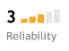

The Wajunagus Journal - TWJ - 2024 @47
January 2024
Friday, January 5 2024
Learn to code with React [Free 12-hour JavaScript course]
Quincy Larson | quincy@freecodecamp.org | 6:52 AM
Learn modern Front-End Development with the powerful React JavaScript library. This in-depth course is taught by software engineer and prolific freeCodeCamp contributor, Hitesh Choudhary. He'll teach you the fundamental structure of React apps, including Hooks, Virtual DOM, React Router, Redux Toolkit, the Context API, and more. You'll also apply these tools by building several projects along the way. (12 hour YouTube course): ⚓Comprehensive Full Stack React with Appwrite - Tutorial
Software Development as a field is always changing. I like to say that the key skill developers possess is not coding itself, but rather the ability to learn quickly. This book will help you think like a developer, so you can pick up new tools, solve new problems, and keep blazing forward as a dev. (full-length book): ⚓How to Innovate as a Developer - a Roadmap to a Successful Tech Career [Full Book]
Quote of the Week: “A year ago I had no idea how to write code, and now I'm building my own stuff and learning how to do things I never thought I'd be capable of. If your new year's resolution is to become a developer, start now! You will never regret it.” — Jack Forge, software developer
March 2024
Friday, March 1 2024
Learn Generative AI with Python [Free 30-hour course]
Quincy Larson | quincy@freecodecamp.org |
freeCodeCamp just published another full-length handbook - this time on Regular Expressions. RegEx are one of the most powerful - and most confusing - features of modern programming languages. You can use RegEx to search through data, validate user input, and even find complex patterns within text. This handbook will teach you key concepts like anchors, grouping, metacharacters, and lookahead. And you'll learn a lot of advanced JavaScript RegEx techniques, too. (full-length handbook): ⚓https://www.freecodecamp.org/news/regex-in-javascript/
Serverless Architecture is a popular approach toward building apps in 2024. Despite the name, there are still servers in a data center somewhere. This isn't magic. But the tools abstract the servers away for you. In this intermediate JavaScript course, Software Engineer Justin Mitchel will teach you how to take a simple Node.js app and run it on AWS Lambda with a serverless Postgres database. He'll even show you how to automate deployment using GitHub Actions and Vercel. (4 hour YouTube course): ⚓https://www.freecodecamp.org/news/serverless-node-js-tutorial/
The freeCodeCamp community publishes dozens of courses, tutorials, podcasts, and full-length books each week. Here I've just shared a few of them. If you ever feel like this waterfall of open source learning resources is too overwhelming, please don't fret. If you just focus your time on freeCodeCamp's core coding curriculum, you'll be set.
Friday, March 15 2024
#115 From 36-year-old Mom to Developer with Phoebe Voong-Fadel
www.freecodecamp.org
Phoebe's review of Harvard CS50:
https://www.freecodecamp.org/news/cs50-course-review/
Tuesday, March 26 2024
How CS50x changed my perspective on coding
freecodecamp.org/news/| Oct 27 '15 / #EDUCATION
“We are going to continue layering on top of those that have come before us…to create something new.” - David J. Malan, Gordon McKay Professor of the Practice of Computer Science, Harvard University
That sentence brought sharply into focus why we trust the work of our predecessors. It is to free up the time required to accomplish something new. We avoid the paralysis of needing to know it all by placing trust in the work that has come before us in order to create the next stage of development.
The aim of coding is not to be reflective but to be inventive.
Batch Print Pro
Wednesday, March 27 2024
Sent through mail | kabugikp@gmail.com | Oct 28, 2018, 6:44 PM
" I am Thankful to all that said 'no' to me. It is because of them that I did it myself ." - Albert Einstein
freecodecamp.org/learn/
"Don't watch the clock. Do what it does. Keep going." - Sam Levenson
Thursday, March 28 2024
Ep. 71: Harvard CS50's David Malan and Colton Ogden on Computer Science
freecodecamp.libsyn.com
C is very close to the metal, close to the hardware. It's about as close as you can get to machine language before it actually becomes zeros & ones.
C is about as close you can get to machine code or assembly language for that matter without actually dipping below that break
1:02:25/2:01:29
Friday March 29 2024
- freeCodeCamp |
- freecodecamp.org
"Whatever you are, be a good one." - Abraham Lincoln
Learn to code Nest.js apps [Free 12-hour course on Full-Stack JavaScript]
- Quincy Larson |
- quincy@freecodecamp.org
-
Learn how to do hard-core data analysis and visualization using Google's stack of freely available tools: Sheets, BigQuery, Colab, and Looker Studio. This beginner-friendly course is taught by a seasoned data analyst. He'll walk you through each of these tools, and show you how to pipe your data from one place to the other. You'll walk away with insights you can apply to accomplish your practical day-to-day goals. (3 hour YouTube course):
📺 Unlock the Power of Data Analytics with Free Google Services
-
In this week's episode of the freeCodeCamp Podcast, I interview Jessica Lord - AKA JLord. You may not have heard of her, but you probably use her code every day. She's worked as a software engineer for more than a decade at companies like GitHub and Glitch. Among her many accomplishments, she created the Electron team at GitHub. Electron is a library for building desktop apps using browser technologies. If you've used the desktop version of Slack, Figma, or VS Code, you've used Electron. We had such a fun time talking about her journey from architecture student to city hall to working at the highest levels of tech. (2 hour watch or listen in your favorite podcast app):
📺 or 🎧 She wrote code you use every day - GitHub Dev and Electron JS Pioneer Jessica Lord [freeCodeCamp Podcast #116]
I've been springing out of bed every morning at like 5 a.m. because I'm so excited about the work we're doing here at freeCodeCamp. It's an absolute pleasure to share these open learning resources with you each week.
Saturday, March 30 2024
W3Schools | info@w3schools.com
Ditch the eggs - stack your basket with new skills instead!
HTML Charsets
www.w3schools.com
https://www.w3schools.com/charsets/
L.A.B. Report - March
Dr. Angela Yu | 12:17 AM
Our brains are pretty efficient at saving space and energy. So if we just keep doing the same things, it throws away the repeated parts and just "diffs" the memories. Only storing the new events.
So if day-in-day-out we keep doing the same things, wake up, drink coffee, go to work, eat lunch, work some more, go home, watch Netflix and then go to bed; none of that gets stored. It's only when something changes that you might remember that weird change. Like if you spilt a whole bottle of milk on yourself when you tried to make coffee, covered yourself in it and had to go through the rest of the workday smelling like a baby cow. You would remember that.
So it seems like I've figured out the secret to life extension (sorry I kept it from you for this long). Do you want to live longer? Then just live more. Have more varied experiences. Walk a different way to work. Try a cortado instead of your usual flat white. Take up a new hobby. Wear something you would never wear. Say hi to that cute barista. If your life was a video game, don't race to complete all the levels. Instead, explore like your mum won't call you to dinner. Make your life a movie instead of a sitcom.
On that note, I'll be spending next month in Paris learning how to cook better (and probably eat better). Si t'habites à Paris et tu veux qu'on se voie, DM moi sur Twitter/X @yu_angela.
Something I learnt about interviews
This month, I've been interviewing what seems like a million candidates for our new frontend, backend and DevOps positions. Being on the other side of the interview table taught me a lot of new things about interviews. If you're interviewing for a new job, here are some tips.
- Learn to break down problems. It's one of the most important skills for a developer, and it can be learnt. Don't do what one person did and just say "I give up, this interview is too hard".
https://jacobian.org/2024/mar/11/breaking-down-tasks/
- Don't use technical jargon to cover up a lack of knowledge. If your interviewer is technical, it can really backfire.
- Revise data structures and algorithms. A lot of the technical interviews will be easier if you are proficient at DSA.
Something I learnt about plain HTML, CSS, JS
We live in a world wide web that is dominated by frameworks. I'm probably guilty of this too. I do love React a bit too much. But I came across this game made with pure HTML, CSS, and JS and it's awesome.
https://www.flaminglunchbox.net/curvy?_hsmi=270433503&_hsenc=p2ANqtz-98Hs3gtcD3edmpvb1QlmACpzxUKbfhpGlv-JFKRaK5UjBHYNNZZrfWMWf8WASOgCKCLfeMqoD-vk-0p3YqWY_DhnNlZg It's also totally doable for any students who have completed my web development course. If you're looking for a cool weekend project to work your brain then try it out and see if you can build it.
Something I learnt about writing
I'm not a writer, but I do enjoy the process. As Paul Graham says, writing is a tool for thinking better. It also helps you make sense of what happens to you. There is no better example of this than the writing of Yassine Meskhout. He is a public defender and his experiences are what makes his writing so laugh-out-loud funny. Every time I read his pieces, I realise that the more interesting you are, the better your writing.
Student Website/App of the Month
This month we chose iMirror, a free iOS app from our student Christopher Endress.
"Hi LAB, Thank you for creating such great educational content. Your commitment to authenticity and passion brings inspiration to all who follow along. Recently, I've made an app to enhance my own mental health journey. It's a reflective journal that builds upon the principles of emotional presence and meditation to encourage mindfulness. Although it's not very popular, I learned that the process of creating something in this way to be one of the most fulfilling things I've ever done."
https://apps.apple.com/us/app/imirror-reflect-grow/id6478330335
April 2024
Tuesday, April 2 2024
freecodecamp.org/learn
"Knowing is not enough; we must apply. Wishing is not enough; we must do." - Johann Wolfgang Von Goethe
Thursday, April 4 2024
The Speech That Will Make You Hard - Dan Pena BEST Motivational Video Ever!
Alpha Leaders | www.youtube.com
"You will continue to suffer if you have an emotional reaction to everything that is said to you. True power is sitting back & observing things with logic. True power is restraint. If words control you, that means everyone else can control you. Breathe and allow things to pass." - Warren Buffett
www.freecodecamp.org/learn
"Twenty years from now you will be more disappointed by the things that you didn't do than by the ones you did do. So throw off the bowlines. Sail away from the safe harbor. Catch the trade winds in your sails." - Mark Twain
The Complete Digital Marketing Course - 12 Courses in 1
www.udemy.com
Master Digital Marketing Strategy, Social Media Marketing, SEO, YouTube, Email, Facebook Marketing, Analytics & More!
Monday, April 8 2024
www.freecodecamp.org/learn
"Strength does not come from physical capacity. It comes from an indomitable will." - Mahatma Gandhi
9000 Free Courses from Tech Giants: Learn from Google, Microsoft, Amazon, and More
www.classcentral.com
Pre-Diabetes USA
prediabetes.org
Wednesday, 10 April 2024
Please slow down and read this.
www.freecodecamp.org/learn
freeCodeCamp is a proven path to your first software developer job.
More than 40,000 people have gotten developer jobs after completing this - including at big companies like Google and Microsoft.
If you are new to programming, we recommend you start at the beginning and earn these certifications in order.
To earn each certification, build it's 5 required projects and get all their tests to pass.
You can add these certifications to your résumé or LinkedIn. But more important than the certifications is the practice you get along the way.
If you feel overwhelmed, that is normal. Programming is hard.
Practice is the key. Practice, practice, practice.
And this curriculum will give you thousands of hours of hands-on programming practice.
And if you want to learn more math and computer science theory, we also have thousands of hours of video courses on freeCodeCamp's YouTube channel.⚓ https://www.youtube.com/freecodecamp
If you want to get a developer job or freelance clients, programming skills will be just part of the puzzle. You also need to build your personal network and your reputation as a developer.
You can do this on LinkedIn and GitHub, and also on the freeCodeCamp forum.⚓ https://forum.freecodecamp.org/
- Quincy Larson, the teacher who founded freeCodeCamp.org
Thursday, April 11 2024
CSS Layout - Horizontal & Vertical Align
www.w3schools.com
CSS is a language that describes how HTML elements are to be displayed on screen, paper, or in other media. CSS saves a lot of work, because it can control the layout of multiple web pages all at once.⚓ https://www.w3schools.com/css/css_align.asp
Saturday, April 13 2024
GraphQL: The Documentary
Honeypot | YouTube.com
The team naturaly organicaly formed & then we were off to the races
A proof of concept
Sunday, April 14 2024
MQL5.community | noreply@mql5.com | 9:58 AM

Wednesday, April 17 2024
Discover Mack's secret: balancing career & education on Coursera
Coursera | Coursera@m.learn.coursera.org
See how our learners balance career and education
Starting or advancing a career while juggling work and personal commitments can be a daunting task. However, learners like Mack have found that the flexible, affordable, and supportive degree programs available on Coursera enable them to pursue their career goals.
Despite running his own business, Mack, a retired Marine, found success with the Bachelors of Arts in Liberal Studies from Georgetown University. The program's flexibility and supportive staff helped Mack tailor his studies to align with his career goals, enabling him to enhance his skills while running his business. The online format provided him the convenience to fit coursework into his existing schedule, plus he could even access material while on the go.
Although online and flexible, Mack uses live sessions to connect with distinguished scholars and industry leaders and builds invaluable professional contacts that he sees beneficial even after graduation.
Get a head start on a degree
Did you know Coursera offers flexible paths to a degree? Make progress before you enroll by completing eligible courses, Specializations, and Professional Certificates that align with your goals and interests.
Saturday, April 20 2024
natural reader
Hi, my name is Muya. And I am the software developer @ Webnamics.
This is a cloned sample of my voice speaking English.
Monday, April 22 2024
Why American Drones Are Failing on Ukrainian Battlefields
WSJ Tech News Briefing
Episode Description
As artificial intelligence becomes more integrated into companies, some executives are rethinking their hiring & staffing needs. WSJ enterprise technology reporter Isabelle Bousquette discusses what this means for workers.
The idea of writting a really good prompt for AI is a niche skill set. Companies will be hiring a lot of prompt engineers that are really good @ writting prompts for AI.
Wednesday, April 24 2024
2024 Course Update
Udemy Instructor: Zaid Sabih | no-reply@e.udemymail.com
I am happy to announce that we just updated the custom Kali that we made for this course. As usual we've made lots of bug fixes and improvements to it to make sure that it works as reliably as possible.
We've also updated the custom HSTSHijack caplet that is needed to bypass HTTPS and HSTS.
And finally we tested everything that is covered in the course with three different setups and at three different locations. So everything that is covered in the course has been tested against the latest systems and works exactly as shown. If anything didn't work for you then please ask us in the Q&A and we'll be happy to assist.
The following lectures have also been updated to account for the changes in this new custom Kali.
Lecture 5 - Initial Prepration
Lecture 6 - Installing Kali Linux as a VM on Windows
Lecture 7 - Installing Kali Linux as a VM on Apple Mac OS (Intel & Silicon Chips)
Lecture 8 - Installing Kali Linux as a VM on Linux
Lecture 9 - Kali Basics
Lecture 44 - Bypassing HTTPS
Lecture 45 - Bypassing HSTS
Lecture 46 - Bypassing HSTS Recap - Firefox
Lecture 47 - Bypassing HSTS Recap - Chrome
Lecture 64 - Basic Information Gathering & Exploitation
Lecture 85 - Spoofing .exe Extension To Any Extension (jpg, pdf ...etc)
I am committed to keep all my courses fully up to date at no cost, all I ask is to review the course if you are happy with it, if you are not then please just let me know and myself and my team will try our best to assist.
Thursday April 25 2024
Learn how to use SQL to analyze data [Free 11-hour course on databases for beginners]
- Quincy Larson |
- quincy@freecodecamp.org |
- 11:21 PM
-
If you've used spreadsheets before, you're all set to learn SQL. This freeCodeCamp course, taught by Senior Data Engineer Vlad Gheorghe, will help you grasp fundamental database concepts. Then you'll apply what you've learned by analyzing data using PostgreSQL and BigQuery. You'll learn about Nested Queries, Table Joins, Aggregate Functions, and more. Enjoy. (11 hour YouTube course):
📺 Learn SQL for Analytics
-
On this week's episode of The freeCodeCamp Podcast, I interview my friend Andrew Brown. He's a CTO who has passed dozens of certification exams from AWS, Azure, Kubernetes, and other cloud companies. We talk about Cloud Engineering and he shares his advice for which certs he thinks people should prioritize if they want to get into the field. We also talk about his love of Star Trek and of the classic Super Nintendo game Tetris Attack. (2 hour watch or listen in your favorite podcast app):
📺 or 🎧 CTO Andrew Brown Passed Dozens of Cloud Certification Exams [freeCodeCamp Podcast Episode #120]
-
Learn Next.js by building your own cloud photo album app. Prolific freeCodeCamp instructor Colby Fayock will teach you how to use powerful AI toolkits that let your visitors modify photos right in their browsers. He also teaches key image optimization concepts. This is a great course for anyone interested in sharpening their front end development skills. (4 hour YouTube course):
📺 Learn Next.js by Building a Cloud Photo App
May 2024
Thursday, May 2 2024
L.A.B. Report - April
Dr. Angela Yu | robots@londonappbrewery.com | 4:54 AM
A mentor once told me, "Confidence is not the appearance of being cool, confidence is the self-knowledge of what you are able to do, what conditions you have been able to withstand and what you can bring to the world with your experiences." I hope in some small way my stories can inspire you to stick to your goals for yourself and aim for your own version of perfection!
Wednesday, May 8 2024
Another Course Update
Udemy Instructor: Zaid Sabih | no-reply@e.udemymail.com
As you know just two weeks ago I updated the custom Kali Linux used for this course along with many other lectures, the list of updated lectures can be found in my previous email / announcement.
Yesterday I updated the installation lectures along with the VMware download links. This update was necessary because VMware got bought up by a company called Broadcome and are changing many things, including the download process.
So you don't need to do anything if you already have VMware installed, but if you faced issues with installed it during the last weekend then please just revise the installation lectures as they have been updated to account for this.
Please let me know in the Q&A if you have any questions or need help with anything else.
Thursday, May 9 2024
NEW! Meta Data Analytics Professional Certificate
Coursera | Coursera@m.learn.coursera.org
NEW! Make the switch to data analytics with Meta
A new career in data analytics awaits! The NEW Meta Data Analyst Professional Certificate is your opportunity to build sought-after, high-paying skills that employers today are hiring for.
In this 100% online curriculum designed by the experts at Meta, you'll master industry-standard methods to:
- Unravel complex data
- Discover valuable insights and trends
- Make business-critical forecasts and more
If you're looking to make a career change without a college degree or prior experience, Meta can lend a hand. Start now and you can qualify for entry-level roles in 5 months. Enroll for free today!
Discover the professional certificate that's right for you
Learn the math that powers AI models [Free 14-hour course on Deep Learning]
Quincy Larson | quincy@freecodecamp.org | 10:57 PM
Quote of the Week: “In mathematics, you don't understand things. You just get used to them.” — John von Neumann, Mathematician, Engineer, and Computer Scientist
Tuesday, May 21 2024
Web Dev Syllabus
Web Development Bootcamp | The App Brewery
FAQs
How long does the bootcamp take to complete?
We teach the course in person over 12 weeks. But we have seen students online complete the course as quickly as 3 weeks. It depends if you are going to work full-time or part-time. It can also be helpful to read around the topics and do more self-directed research and experimentation.
I don't have any prior experience or a technical background, can I join the bootcamp?
The course is designed for students of all levels. The youngest person we've had on the course is 11, the oldest 86. The most inexperienced student didn't know what a website is, the most experienced works for Twitter as a developer. The most important thing is perseverance and willingness to learn. If you have that then you'll do great!
Friday, May 24 2024
Don't be a bottleneck
https://www.metabase.com/
Fast analytics with the friendly UX and integrated tooling to let your company explore data on their own.
Metabase; ⚓https://www.metabase.com/
Friday, May 31 2024
Learn C Programming from Dr. Chuck [Free 18-hour course taught by a CompSci professor]
Quincy Larson | quincy@freecodecamp.org | 1:50 AM
My hero Dr. Chuck created this comprehensive C programming course and shared it with the global freeCodeCamp community. Dr. Chuck is a University of Michigan computer science professor, and he is a hardcore advocate for everyone learning C. Not only will this course help you understand computer architecture and low-level programming. It will also teach you Object-Oriented Programming concepts. This course even includes an interview with the creator of Python, Guido van Rossum. As you may know, Python - like most modern programming languages - is built on top of C. (18 hour YouTube course): ⚓https://www.freecodecamp.org/news/complete-c-programming-course-from-dr-chuck/
Quote of the Week: “C retains the basic philosophy that programmers know what they are doing; it only requires that they state their intentions explicitly.” — Brian W. Kernighan, who created the C Programming language alongside Dennis Ritchie back in the 1970s
June 2024
Saturday, June 8 2024
Learn Data Science Fundamentals with Python [Free Full-Length Book]
Quincy Larson | quincy@freecodecamp.org |12:21 AM
freeCodeCamp just published a full book on how to use Python for Applied Data Science. You'll start by learning core data science principles. Then you'll learn about data cleaning, data transformation, and Exploratory Data Analysis. You'll also learn powerful Python libraries like Pandas, NumPy, and Matplotlib. This is a full-blown reference manual with tons of code examples. You can bookmark it and read it over multiple sessions as you continue to expand your skills. Enjoy. (full-length book):⚓ https://www.freecodecamp.org/news/applied-data-science-with-python-book/
Learn how to code your own functional clone of YouTube that runs on a phone. This course will teach you how to reverse engineer many of YouTube's key features using Flutter, Firebase, and Riverpod. You can code along at home and step-by-step implement authentication, state management, video uploading, playback, and even social features. (8 hour YouTube course):⚓ https://www.freecodecamp.org/news/build-a-youtube-clone-with-flutter-firebase-and-riverpod/
Quote of the Week: “Technology is not the driver of change. What drives technology is human desire.” — Ellen Ullman, software engineer and author
Monday, June 10 2024
Another Course Update
Udemy Instructor: Zaid Sabih | no-reply@e.udemymail.com | 3:15 PM
Just wanted to let you know that 6 lectures have been updated in the course. These lectures show how to use msfvenom to create backdoors instead of Veil as Veil is outdated now and msfvenom is actually a more core skill that ethical hackers should have, so it fits the core goals of this course better.
- Lecture 73: Backdoors and Payloads Basics
- Lecture 74: Creating Your Own Backdoor
- Lecture 75: Listening for Backdoor Connections
- Lecture 76: Hacking Windows 11 Using Your Own Backdoor
- Lecture 77: How to Bypass Anti-Virus Programs
- Lecture 115: Discovering Subdomains
We have also fixed a number of bugs in the custom Kali. The newest version is already up and can be downloaded from the same download page. ⚓ https://zsecurity.org/download-custom-kali/?utm_campaign=2024-06-10&utm_content=educational&utm_medium=857010&utm_source=email-sendgrid&utm_term=6956218
Please let me know in the Q&A if you have any questions or need help with anything else.
Saturday, June 15
Learn the key Python skills used in Data Science [Free 6-hour course]
Quincy Larson | quincy@freecodecamp.org | 12:45 AM
freeCodeCamp just published a comprehensive course to help you learn the Python skills used in data science. You'll start by learning the basics of data analytics, such as data wrangling, filtering, and statistical analysis. Then you'll apply those skills toward the field of A/B Testing, through a series of practical projects. This course is an excellent place to strengthen your Python abilities. (6 hour YouTube course): ⚓ https://www.freecodecamp.org/news/learn-python-for-data-science-hands-on-projects-with-eda-ab-testing-business-intelligence/
On this week's freeCodeCamp podcast, I interview Dr. Chuck, creator of the popular Python for Everyone course. He's a Computer Science professor at University of Michigan, and he's taught coding to millions of students through his freeCodeCamp courses. We talk about what separates a “Master Programmer” from an average one. We delve into what he sees as the biggest shortcomings of university programs - even elite ones like the one he teaches at. We also discuss his theories on the recent tech layoffs, and his suggestions for how devs can stay ahead of recent breakthroughs in AI. (1 hour watch or listen in your favorite podcast app): ⚓ https://www.freecodecamp.org/news/how-to-outsmart-ai-as-a-developer-dr-chuck-interview-127/
You may have heard people talk about an emerging technique called Retrieval-Augmented Generation (RAG). This is when an AI looks up information from outside sources to improve its own responses. Well, freeCodeCamp just published a handbook that will help you understand RAG so you can use it in your AI models. Even if you don't have time to read the whole thing, I still encourage you to bookmark it for future reference. (full-length handbook): ⚓ https://www.freecodecamp.org/news/retrieval-augmented-generation-rag-handbook/
I hope you're having a fun summer and learning a ton. The entire freeCodeCamp community is right here alongside you, expanding our skills and rising to face new challenges. I encourage you to come hang out with us on our Discord chat server and share your adventures with us: ⚓ https://www.freecodecamp.org/news/how-to-join-the-freecodecamp-discord-server-and-chat-with-fellow-campers/
Quote of the Week: “If people do not believe that mathematics is simple, it is only because they do not realize how complicated life is.” — John von Neumann, Mathematician and Computer Science Pioneer
Wednesday, June 19 2024
Python Data Scientist/Analyst - LLM Project
YO HR Consultancy ‧ Kenya (Remote)
$15-$21 / hour
LinkedIn | jobs-noreply@linkedin.com | 9:37 PM
💼 $15/hr - $21/hr ‧ Remote ‧ Contract ‧ Associate
Job Responsibilities
- Write effective Python code to tackle complex issues, but also use your business sense and analytical abilities to glean valuable insights from public databases
- Communicate clearly with researchers and help the organization in realizing its objectives
- Clearly express the reasoning and logic when writing code in Jupyter notebooks, or other suitable mediums
- Fix bugs in the code and create thorough documentation
- Utilize extensive data analysis skills to develop and respond to important business queries using available datasets (such as those from Kaggle, the UN, the US government, etc.)
- Effectively communicate with the researchers to comprehend the needs and provide the results
Friday, June 21 2024
Learn how to use Linux's most powerful features [Free 2-hour crash course]
Quincy Larson | quincy@freecodecamp.org | 12:38 AM
freeCodeCamp just published a Linux course that will teach you how to use some of the open source operating system's most powerful features. It's designed with both Linux beginners and intermediate users in mind. You'll learn Linux's file system with hard links, soft links, permissions, and root accounts. You'll also learn how to use grep, a command line tool for finding what you need inside large datasets. This course also includes interactive labs, so you can apply the new skills you're learning. (2 hour YouTube course): ⚓ https://www.freecodecamp.org/news/free-linux-crash-course-with-labs/
One of the most exciting areas of AI at the moment is Retrieval Augmented Generation (RAG). This freeCodeCamp Python course will teach you how to combine your own custom data with the power of Large Language Models (LLMs). You'll use LangChain, Mistral AI, Ollama, and more. You'll learn straight from Per Borgan, a software engineer, teacher, and long-time friend of mine. (2 hour YouTube course): ⚓ https://www.freecodecamp.org/news/building-intelligent-apps-with-mistral-ai/
The Black-Scholes Equation is the most important mathematical formula that most people have never heard of. Black-Scholes completely revolutionized corporate finance when it was discovered in 1973. This tutorial will explain how the formula works, and how you can implement it in Python. Then you'll use it to predict the price of concert tickets, and learn about its many other real-world applications. (15 minute read): ⚓ https://www.freecodecamp.org/news/how-the-black-scholes-equation-works-python-examples/
Quote of the Week: “Innovation must lead infrastructure for a simple but compelling reason: Innovation produces new types of products and markets, and it is virtually impossible to know how to run those markets efficiently before they are created.” — Myron Scholes, Nobel Prize winning economist and co-creator of the Black-Scholes Equation
July
Friday, July 19, 2024
Learn CSS by coding 24 projects [Free 3-hour course on Front End Web Dev for beginners]
Quincy Larson | quincy@freecodecamp.org | 2:45 AM
Learn CSS by coding a ton of CSS. This freeCodeCamp course will teach you how to style your webpages by building 24 projects step-by-step. You'll recreate layouts from popular apps like GitHub, CodePen, and Instagram. You'll build loading animations, progress bars, and flashcards using pure CSS. And you'll learn key CSS concepts like transitions, pseudo-elements, keyframe animations, and hover effects. (3 hour YouTube course): ⛓ https://www.freecodecamp.org/news/create-24-css-projects/
freeCodeCamp just published a comprehensive guide to prepare you for GitHub's Advanced Security Certification. We now have courses for 3 out of 4 of GitHub's professional certs. You'll learn how to identify vulnerabilities, secure your workflows, manage dependencies, and take action on alerts. In short, this course will guide you down the path of passing this exam, so you can add another feather to your cap as a capable GitHub operator. (3 hour YouTube course): ⛓ https://www.freecodecamp.org/news/pass-the-github-advanced-security-certification-exam/
Monte Carlo simulations are one of the most powerful tools data scientists have in their toolbox. Named after a famous casino in Monaco, Monte Carlo methods involve creating detailed models of a situation with many uncertain factors. By running the model many times with different random inputs, you can see a wide range of possible outcomes, and can learn more about how the system behaves. This tutorial will give you more insight into Monte Carlo methods and show you how they're used for everything from financial modeling to designing circuit boards. (20 minute read): ⛓ https://www.freecodecamp.org/news/what-are-monte-carlo-methods/
Pre-requisites
You should have a basic knowledge of statistics to understand everything in this article.
If you need to brush up on your stats skills, I recommend checking out this freeCodeCamp course: ⛓ https://www.youtube.com/watch?v=xxpc-HPKN28
August
Friday, August 9 2024
Learn Linux for Beginners [Free Full-Length Book]
Quincy Larson | quincy@freecodecamp.org | 4:59 AM
A vast majority of servers these days run Linux as their operating system. And a lot of developers run Linux on their laptops as well. It's safe to say that Linux is one of the most useful skills you can learn working in tech. freeCodeCamp just published this comprehensive book that will teach you how to install Linux and work with its file system and many packages. You'll learn about shell scripting, networking, command line automation, security, and more. You can read this right in your browser and bookmark it for future reference. (full-length book): ⚓ https://www.freecodecamp.org/news/learn-linux-for-beginners-book-basic-to-advanced/
And while you're learning Linux, why not learn how operating systems work in more detail? This massive course will teach you about Kernels, von Neumann Architecture, Multitasking, API Calls, Interrupts, CPU Scheduling, Disk Structure, and more. (25 hour YouTube course): ⚓ https://www.freecodecamp.org/news/learn-about-operating-systems-in-depth/
Did you know that Babe Ruth - the most famous home-run-hitting baseball player of all time - was blind in one eye? He made up for this by being extremely good at predictive analytics - honing his instincts for what type of pitch is coming across home plate. I learned this during my insight-filled conversation with Ken Jee. He's a golfer turned data scientist who works closely with professional athletes. During my podcast interview, Ken shares a ton of tips for folks interested in getting into data science and machine learning, and for athletes who want to gain a quantitative edge on their competitors. (2 hour watch or listen in your favorite podcast app): ⚓ https://www.freecodecamp.org/news/where-data-science-meets-sports-analytics-with-ken-jee-podcast-interview-135/
Saturday, 10 August, 2024
Southport: The catalyst for UK riots, & my hometown
Reuters World News | Spotify | Podcast Episode
It's human nature, people gravitate towards stories that resonate with their own emotions & their own beliefs.
Friday, August 16 2024
Learn DevOps and pass the AWS Developer Associate cert exam [Free 81-hour course]
Quincy Larson | quincy@freecodecamp.org | 8:41 AM
Most machine learning these days is done with Python, but there are some JavaScript libraries for building AI systems as well. ml5.js is a developer-friendly open source library that's built on top of Google's TensorFlow. This crash course will teach you key concepts, and how to use an open dataset from Kaggle to code your first model. (1 hour YouTube course): ⚓ https://www.freecodecamp.org/news/learn-ml5js-for-machine-learning-in-javascript/
Developers often build small chunks of reusable code called Components. And at some point it makes sense to pull these together into a full-blown Component Library. This tutorial will give you a solid understanding of what Component Libraries are, their history, and how they differ from Design Systems. You'll learn how to wield the power of Component Libraries for yourself, so you can avoid rewriting code that other devs have written so many times before, and instead focus on the novel work to be done. (40 minute read): ⚓ https://www.freecodecamp.org/news/what-is-a-component-library-when-to-build-your-own/
Saturday, August 31 2024
Learn Java and the Spring Boot WebDev framework [Free 10-hour course]
Quincy Larson | quincy@freecodecamp.org | 9:36 AM
React Compiler is a new feature in Version 19 of the popular React JavaScript library. The compiler can now handle optimization for you, saving you a ton of development time and sparing you many headaches. This in-depth tutorial will show you how React Compiler works, and give you practical tips for harnessing its full power in your JavaScript apps. (20 minute read): ⚓ https://www.freecodecamp.org/news/react-compiler-complete-guide-react-19/
Microsoft Excel continues to be one of the most widely-used productivity tools - even among developers. This tutorial will teach you how to use Excel for Data Visualization. You'll learn about Excel's many chart types and how you can customize them. You'll even learn how to build your own interactive dashboards. (1 hour YouTube course): ⚓ https://www.freecodecamp.org/news/excel-for-data-visualization/
September
Friday, September 20 2024
Learn Design Patterns and Object-Oriented Programming [Free 12-hour Course]
Quincy Larson | quincy@freecodecamp.org | 1:10 PM
Quote of the Week: “If you aren't sure which way to do something, do it both ways and see which works better.” — John Carmack, programmer and co-creator of DOOM
Friday, September 27 2024
The horticultural crops authority bill, 2024
November 2024
Saturday, November 16 2024
Learn full-stack JavaScript by coding your own dating app [Free 7-hour course]
Quincy Larson | quincy@freecodecamp.org | 2:38 AM
freeCodeCamp just published a comprehensive full-stack development course that will help you learn modern JavaScript tools by building your own dating app. This course will walk you step-by-step through setting up Next.js, Prisma, and NextAuth. You'll even deploy your app to the web using Vercel. Along the way, you'll add interactive features with Pusher for real-time web socket messaging, and Cloudinary for media uploads. This is an ideal course if you want to expand and solidify your web dev skills. (7 hour YouTube course): ⚓Build & Deploy a Full Stack Dating App
Most developers I know use Git constantly. I certainly do. And one tool that helps keep me sane is Git aliases. These are custom shortcuts that dramatically reduce the amount of typing you have to do in your command line. This tutorial will teach you how to create your own custom Git aliases - with custom parameter syntax - and make them globally accessible throughout your developer environment. (15 minute read): ⚓How to Simplify Your Git Commands with Git Aliases
Quote of the Week: “Brainpower is by far our scarcest resource.” — Edsger Dijkstra, programmer and computer scientist
Friday, November 22 2024
Learn to code your own Android and iOS app [Free 10-hour course on Flutter mobile app dev]
Quincy Larson | quincy@freecodecamp.org | 1:53 PM
freeCodeCamp just published a comprehensive course on Flutter - a popular framework for building Android and iOS apps at the same time. We think Flutter is awesome, and use it to build and maintain freeCodeCamp's own mobile apps. This beginner-level course will teach you Flutter by walking you through step-by-step as you code your own clone of the Spotify app. (10 hour YouTube course): ⚓Create a Full Stack Spotify Clone with Flutter
Reverse Engineering is when you want to build your own version of an app, but don't know how it was implemented - you only have the finished product to serve as your guide. This tutorial will give you a methodology for reverse engineering websites so you can get practice implementing features you see in the wild. (30 minute read): ⚓How to Reverse Engineer a Website - a Guide for Developers
Whether you're a developer or a semi-technical decision maker on a team, you'll benefit from understanding modern development frameworks and what they bring to the table. This comprehensive guide will break down the many framework categories for you, so that you can choose the right tools for the job. You'll learn about AI frameworks, UI frameworks, testing tools, infrastructure tools, and more. (30 minute read): ⚓Understanding Modern Development Frameworks: A Guide for Developers and Technical Decision-makers
Quote of the Week: “If you're 5-10 years old and your main circle isn't frequently discussing: PWA vs Native app, TypeScript vs JavaScript, Flutter vs React Native - and are instead discussing: Playdough, LEGOs, Goldfish... then it's time to elevate your circle.” — Ben Awad, software engineer and freeCodeCamp contributor. And yes, he means this as a joke.
Thursday, November 28 2024
Learn to code Python [Free full-length handbook for people who already know a little JavaScript]
Quincy Larson | quincy@freecodecamp.org | 5:42 PM
Learn HTML Canvas by coding your own meme generator website. You can code along at home with this tutorial and build a simple website that creates memes where you can customize the text that appears on top of an image. This is a beginner-level project that will only take a few hours. It will give you hands-on practice with some powerful web development tools. (15 minute read): ⚓How to Create a Meme Generator Using HTML Canvas
Quote of the Week: “Language choice is not as important as all the other choices: if you have the right overall architecture, the right team of programmers, the right development process that allows for rapid development with continuous improvement, then many languages will work for you. If you don't have those things you're in trouble regardless of your language choice.” — Peter Norvig, Software Engineer and AI researcher at Stanford
December 2024
Monday, December 2 2024
L.A.B. Report
Learn something new every month
L.A.B. Report - November | Dr. Angela Yu | 1:01 AM
But as one older yogi told me: "Life is a river, if you don't paddle, you recede".
But time is a great magician. And we often underestimate the transformations we can make by persisting at the same thing over long periods of time.
I learnt about how much energy flows from Scandinavia
⚓In this beautiful visualiser, Zoltán Marić shows us how electricity is created and distributed across Europe. It's weirdly fascinating and truly a fantastic use of publicly available APIs.
Student App of the Month
Hello Angela,
First of all thank you for the amazing online course you put together which has been really helpful for African developers like myself.
I created an invoice & receipt generator app to help small business owners and freelancers to create invoices and receipts easily with different templates and currencies to choose from.
Check it out! ⚓https://apps.apple.com/us/app/invoice-me-receipt-generator/id6476115073
Monday, December 9 2024
Get in on Ksh 0 for 3 free months of Spotify Premium now.
Spotify | no-reply@spotify.com | 5:13 PM
Tuesday, December 10 2024
Learn how to build React apps [Free 16-hour JavaScript course]
Quincy Larson | quincy@freecodecamp.org | 12:06 PM
freeCodeCamp just published a course that will teach you the fundamentals of React, the most popular front end development JavaScript library. This course will teach you key concepts as you code along at home, building several projects including a meme generator and an AI-powered chef's recipe app. This course teaches emerging best practices, and the newest version of React, React 19. (16 hour YouTube course): ⚓Learn React from Bob Ziroll
reeCodeCamp also just published a full-length book on how to design your own Microservices and deploy them to the cloud. Microservice Architecture is a software development approach where you build stand-alone apps that only do one specific thing. Then these Microservices call upon one another to get more complicated things done. This differs from the traditional Monolith approach, where everything's part of the same codebase. This intermediate book will teach you about Synchronous versus Async Communication, RESTful APIs, Protocol Buffers, Container Orchestration, CI/CD Pipelines, and more. It also features case studies from companies that have adopted Microservices, such as Amazon and Netflix. (full-length book): ⚓The Microservices Book - Learn How to Build and Manage Services in the Cloud
One of my favorite podcast interviews I've done was with John Washam, a software engineer at Amazon. John's also the creator of one of the most popular open source projects of all time: Coding Interview University. This is John's first-ever appearance on a podcast, so we go really in-depth. We talk about his years working as an interpreter in the US military. Then we dive into how he taught himself software engineering, and what he's learned from climbing the ranks at a big tech company. If you're learning to code later in life, this should be particularly helpful for you. (3 hour watch or listen in your favorite podcast app): ⚓How to get a FAANG Dev Job in your 40s with Coding Interview University creator John Washam [#134]
Thursday, December 12 2024
Learn How Math Can Make Your Code Better By Coding Polyrhythms
freeCodeCamp
Friday, December 20 2024
#154 Why developers needn't fear CSS
With the King of CSS himself Kevin Powell
The freeCodeCamp Podcast
Links we talk about during our conversation:
Wednesday, December 25
L.A.B. Report - December
Learn something new every month
Dr. Angela Yu
Hey friend, How was your December? Did you set your New Year's resolutions yet? I have some news that might be an early Christmas present, especially if your New Year's resolution is learning to program.
Today, I'm launching a brand-new course 🎉. As those of you who have followed me over the years will know, I release a new course every leap year (literally every 4 years or so)! But this one is even more special. ⚓Learn Javascript in 1 Month
Not only did it take years to build, but it is based on a completely different way of teaching. Leveraging 2024 technology, I think we've managed to create the best form of education that currently exists in the world.
I checked the stats recently, and I've now taught over 3 million people how to code (I know, that number still baffles me). However, something that has always frustrated me is how limiting the tools are to create my courses. It's 2024 and there are still only two forms of online learning, free videos and paid videos. It's all just video hosting. We've not really moved on since YouTube launched 20 years ago!
That's why I've been working with the Auditorium team to build what I think is the future of education. Interactive videos that you can reach into and touch. Code examples that you can run. The code you write gets checked and your programs are verified. Complex code that you can step through and visualise. Everything packaged into one place, where the focus is on doing, instead of installing a million pieces of software.
And I've built the course for one of the most requested course topics - Javascript. So if you've ever wanted to do anything with the web, or if you just want to finally succeed at learning your first programming language, you can do it in 31 days.
And I know what you're thinking—“But Angela, with AI tools that write code for me, do I even need to learn programming anymore?”
The answer is yes, absolutely. AI tools are incredible (I use them too!), but they're like having a GPS. To truly navigate the coding world—whether you're working with low-code or no-code solutions—you need to understand the map. Without knowing the basics of programming, you won't know how to steer those tools in the right direction or troubleshoot when things go wrong.
So, why not make 2025 the year you finally check “learn programming” off your resolution list? And if you're still looking for a thoughtful, last-minute gift, my JavaScript course could be just the thing for someone you care about. It's a gift of possibility—a skill that can change lives.
⚓Click here and use the code ANGELA to get lifetime access to the entire course for the price of a hamburger. And if you do, I'd love to hear about your journey. Write to me ⚓@yu_angela or tag me to share your progress.
I Learnt that You Can Wander through Any City
I think through all my problems while walking (I think our team is extra healthy because of all the walking meetings). One of my favourites is along the south bank on a sunny day in London. This month, I found a website that lets you do this virtually through a tonne of cities using this hobby website. ⚓CityWalks
I Learnt that You can Just Reply with A Single Word in an Email
Years ago, my boss shared valuable advice after I sent him a typically polite British email: “Would it be possible, if it's not too much trouble, when you have time, to review my thesis?” His one-word reply: “No.” I nearly laughed out loud. Later, he explained that every email you send adds to someone's to-do list. Overly polite emails invite more replies, leaving less time for actual work. His advice? Check email sparingly, reply only when necessary, and imagine you're the CEO of a Fortune 500 company—concise and efficient. This month, I found a great list of “email like a boss” tips. For instance, instead of saying “no problem,” you could say “happy to help.” ⚓reddit
Student App of the Month
This month, we chose Akinyi by our student Katie Kiguru who completed our Flutter course on Udemy.
Hi Angela and Team,
Thank you for putting together a great course on Udemy on Flutter which was really. helpful on my journey to building my first flutter app. I am proud of the app I built and would love your help to help spread the word. Akinyi is an app designed to support parents and caregivers of children with developmental needs, inspired by my 4 year daughter's journey with Autism and Weaver Syndrome. You can learn more about the app on ⚓https://akinyi.xyz/.